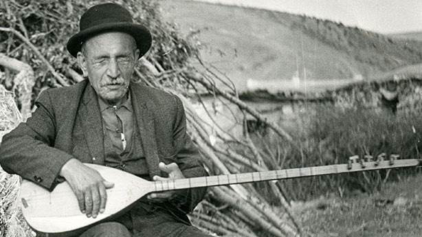

Eserleri bugün başka sanatçıların albümlerinde yer alan, bağlamanın cumhuriyet tarihindeki engin denizi. Türkiye çapında tanınması öncesinde Sivas'taki tren garında bağlama çalan, devamında birçok kişiye esin kaynağı olan, doğa sevgisiyle ölümsüz ve özellikle görme engelliler için tartışmasız bir örnek olan halk ozanı...
Bozkır müziğinin en önemli ismi. Devlet sanatçılığı unvanını red eden, yaşadığı dönemle birlikte bir efsane haline gelen halk ozanı...
Türk Halk Müziği'nin sevilen, kadife sesli, en ünlü kadın yorumcusu...